특수용접기능사 (2011-04-17 기출문제)
1과목: 용접일반
1. 33.7리터의 산소 용기에 150kgf/㎠으로 산소를 충전하여 대기 중에서 환원하면 산소는 몇 리터인가?
- 5⑤5
- 6066
- 7077
- 8088
(정답률: 83%)

2. 용접법의 분류 중에서 융접에 속하는 것은?
- 테르밋 용접
- 초음파 용접
- 플래시 용접
- 시임 용접
(정답률: 77%)
3. 가스용접법에서 후진법과 비교한, 전진법의 설명에 해당하는 것은?
- 열 이용율이 나쁘다.
- 용접속도가 빠르다.
- 용접변형이 작다.
- 용접가능 판 두께가 두껍다.
(정답률: 68%)
4. 피복 아크 용접을 할 때 용융속도를 결정하는 것으로 맞는 것은?
- 용융속도 = 아크전류 × 용접봉 쪽 전압강하
- 용융속도 = 아크전압 × 용접봉 쪽 전압강하
- 용융속도 = 아크전류 × 용접봉 지름
- 용융속도 = 아크전류 × 아크전압
(정답률: 74%)
5. 가스 가우징에 대한 설명으로 가장 올바른 것은?
- 강재 표면에 홈이나 개재물, 탈탄층 등을 제거하기 위해 표면을 얇게 깎아내는 것
- 용접 부분의 뒷면을 따내든지, H형 등의 용접 홈을 가공하기 위한 가공법
- 침몰선의 해체나 교량의 개조, 항만의 방파제 공사 등에 사용하는 가공법
- 비교적 얇은 판을 작업 능률을 높이기 위항 여러 장을 겹쳐놓고 한 번에 절단하는 가공법
(정답률: 53%)
6. 가스 절단에 영향을 주는 요소가 아닌 것은?
- 산소의 압력
- 팁의 크기와 모양
- 절단재의 재질
- 호스의 굵기
(정답률: 85%)
7. 산소-아세틸렌 불꽃의 종류가 아닌 것은?
- 중성 불꽃
- 탄화 불꽃
- 질화 불꽃
- 산화 불꽃
(정답률: 77%)
8. 다음 직류 아크 용접에서 역극성의 특징이 아닌 것은?
- 용입이 얕다.
- 비드 폭이 좁다.
- 용접봉의 녹음이 빠르다.
- 박판, 주철, 고탄소강, 비철금속 등의 용접에 쓰인다.
(정답률: 72%)
9. 프로판가스가 완전 연소하였을 때 설명으로 맞는 것은?
- 완전 연소하면 이산화탄소로 된다.
- 완전 연소하면 이산화탄소와 물이 된다.
- 완전 연소하면 일산화탄소와 물이 된다.
- 완전 연소하면 수소가 된다.
(정답률: 67%)
10. 절단의 종류 중 아크 절단에 해당되지 않는 것은?
- 아크 에어 가우징
- 분말 절단
- 플라스마 제트 절단
- 불활성 가스 아크 절단
(정답률: 68%)
11. 연강용 가스용접봉의 종류 GA43에서 43이 뜻하는 것은?
- 용착 금속의 연신율 구분
- 가스 용접봉
- 용착 금속의 최소 인장 강도 수준
- 용접봉의 최대 지름
(정답률: 89%)
12. 용접봉의 보관 및 취급상의 주의사항으로 틀린 것은?
- 용접작업자는 용접전류, 용접자세 및 건조 등 용접봉 사용조건에 대한 제조자의 지시에 따라야 한다.
- 보통 용접봉은 70~100℃에서 30~60분 정도 건조시켜야 한다.
- 저 수소계 용접봉은 300~350℃에서 1~2시간 정도 건조시켜야 한다.
- 낮은 곳에 보관한다.
(정답률: 67%)
13. 다음 중 야금적 접합법에 해당되지 않는 것은?
- 용접(fusion welding)
- 접어 잇기(seam)
- 압접(pressure welding)
- 납땜(brazing and soldering)
(정답률: 79%)
14. 교류용접기에서 무부하전압인 높기 때문에 감전의 위험이 있어 용접사를 보호하기 위하여 설치한 장치는?
- 초음파 장치
- 전격방지 장치
- 원격 제어 장치
- 핫 스타트 장치
(정답률: 89%)
15. 다음 중 교류 아크 용접기에 포함되지 않는 것은?
- 가동 철심형
- 가동 코일형
- 정류기형
- 가포화리액터형
(정답률: 77%)
16. 양극전압 강하 VA 음극전압 강하 Vk, 아크기둥 전압강하 Vp라고 할 때 Va의 올바른 관계식은?
- Va = VA ＋ Vk -Vp
- Va = Vk ＋ Vp - VA
- Va = VA - Vk -Vp
- Va = Vk ＋ Vp ＋ VA
(정답률: 50%)
17. 가스발생식 용접봉의 특징 설명 중 틀린 것은?
- 전자세 용접이 불가능하다.
- 슬래그의 제거가 손쉽다.
- 아크가 매우 안정된다.
- 슬래그생성식에 비해 용접속도가 빠르다.
(정답률: 68%)
18. 황동 가공재를 상온에서 방치하거나 또는 저온풀림 경화된 스프링재는 사용 중 시간의 경과에 따라 경도 등 여러 성질이 나빠진다. 이러한 현상을 무엇이라고 하는가?
- 경년변화
- 탈아연부식
- 저연균열
- 저온풀림경화
(정답률: 69%)
19. 알루미늄이나 그 합금은 대체로 용접성이 불량하다. 그 이유가 아닌 것은?
- 산화알루미늄의 용융온도가 알루미늄의 용융온도보다 매우 높기 때문에 용접성이 나쁘다.
- 용융점이 660℃로서 낮은 편이고, 색체에 따라 가열 온도의 판정이 곤란하여 지나치게 용융이 되기 쉽다.
- 용접 후의 변형이 적고 균열이 생기지 않는다.
- 용융응고 시에 수소가스를 흡수하여 기공이 발생되기 쉽다.
(정답률: 58%)
20. 오스테나이트계 스테인리스계의 설명 중 틀린 것은?
- 내식성이 높고 비자성이다.
- Cr 18% - Ni 8% 스테인리스강이 대표적이다.
- 용접이 비교적 잘되며, 가공성도 좋다.
- 염산, 황산에 강하다.
(정답률: 76%)
21. 실용되고 있는 탄소강은 0.⑤~1.7%C를 함유하며, 각각 다른 용도를 갖고 있다. 탄소강에서 가공성과 강인성을 동시에 요구하는 경우에 탄소함유량이 어느 정도 함유되어 있는 것을 사용하는 것이 적당한가?
- 0.⑤~0.3%C
- 0.03~0.45%C
- 0.45~0.65%C
- 0.65~1.2%C
(정답률: 51%)
22. 켈밋에 대한 설명으로 적당하지 않은 것은?
- 구리와 납의 합금이다.
- 축에 대한 적응성이 우수하다.
- 화이트메탈보다 내 하중성이 크다.
- 저속, 저하중용 베어링에 많이 사용한다.
(정답률: 42%)
23. 면심입방격자에 속하는 금속이 아닌 것은?
- Cr
- Cu
- Pb
- Ni
(정답률: 35%)
24. 금속침투법의 종류에 속하지 않는 것은?
- 설퍼라이징
- 세라다이징
- 크로마이징
- 칼로라이징
(정답률: 68%)
25. 합금강이 탄소강에 비하여 개선되는 성질이 아닌 것은?
- 전자기적 성질
- 담금질석
- 연전도율
- 내식, 내마멸성
(정답률: 37%)
26. 주철균열의 보수용접 중 가늘고 긴 용접을 할 때 용접선에 직각이 되게 꺾쇠 모양으로 직경 6㎜정도의 강봉을 박고 용접하는 방법은?
- 스터드법
- 비녀장법
- 버터링법
- 로킹법
(정답률: 61%)
27. 다음 중 주강에 대한 일반적인 설명으로 틀린 것은?
- 주철에 비하면 용융점이 800℃ 정도의 저온이다.
- 주철에 비하여 기계적 성질이 우수하다.
- 주조상태로는 조직이 거칠고 취성이 있다.
- 주강 제품에는 기포 등이 생기기 쉬우므로 제강작업에는 다량의 탈산제를 사용함에 따라 Mn이나 Ni의 함유량이 많아진다.
(정답률: 53%)
28. 용접이나 단조 후 편석 및 잔유응력을 제거하여 균일화시키거나 연화를 목적으로 하는 열처리 방법은?
- 담금질
- 뜨임
- 풀림
- 불림
(정답률: 47%)
29. 잔류 응력을 완화하는 방법 중에서 저온응력 완화법의 설명으로 맞는 것은?
- 용접선의좌우 양측을 각각 250㎜의 범위를 625℃에서 1시간 가열하여 수냉하는 방법
- 600℃에서 10℃씩 온도가 내려가게 풀림처리 하는 방법
- 가열 후 압력을 가하여 수냉하는 압법
- 용접선의 양측을 정속으로 이동하는 가스 불꽃에 의하여 나비 약 150㎜에 걸쳐서 150~200℃로 가열한 다음 수냉하는 방법
(정답률: 56%)
30. 전류를 통하여 자화가 될 수 있는 금속재료 즉 철, 니켈과 같이 자기변태를 나타내는 금속 또는 그 합금으로 제조된 구조물이나 기계부품의 포면부에 존재하는 결함을 검출하는 비파괴시험법은?
- 맴돌이 전류시험
- 자분 탐상시험
- ϒ선 투과시험
- 초음파 탐상시험
(정답률: 56%)
31. MIG 용접의 특징 설명으로 틀린 것은?
- 용접 속도가 빠르다.
- 아크 자기제어 특성이 있다.
- 전류밀도가 높아 3㎜이상의 판 용접에 적당하다.
- 직류 정극성 이용 시 청정작용으로 알루미늄이나 마그네슘 용접이 가능하다.
(정답률: 54%)
32. CO2가스아크 용접에서 아크전압이 높을 때 나타나는 현상으로 맞는 것은?
- 비드 폭이 넓어진다.
- 아크 길이가 짧아진다.
- 비드 높이가 높아진다.
- 용입이 깊어진다.
(정답률: 54%)
33. 전자동 MIG용접과 반자동용접을 비교했을 때 전자동 MIG용접의 장점으로 틀린 것은?
- 우수한 품질의 용접이 얻어진다.
- 생산단가를 최소화 할 수 있다.
- 용착 효율이 낮아 능률이 매우 좋다.
- 용접속도가 빠르다.
(정답률: 72%)
34. 서브머지드 아크 용접에 대한 설명으로 틀린 것은?
- 용접장치로는 송급장치, 전압제어장치, 접촉팁, 이동대차 등으로 구성되어 있다.
- 용제의 종류에는 용융형 용제, 고온 소결형 용제, 저온 소결형 용제가 있다.
- 시공을 할 때는 루트 간격을 0.8㎜이상으로 한다.
- 엔드 탭의 부착은 모재와 홈의 형상이나 두께, 재질 등이 동일한 규격으로 부착하여야 한다.
(정답률: 63%)
35. 다음 중 비파괴 시험이 아닌 것은?
- 초음파 탐상시험
- 피로시험
- 침투 탐상시험
- 누설 탐상시험
(정답률: 82%)
2과목: 용접재료
36. 알루미늄을 TIG 용접할 때 가장 적합한 전류는?
- AC
- ACHF
- DCRP
- SCSP
(정답률: 37%)
37. 다음 가스 중에서 발열량이 큰 것에서 작은 것의 순서로 배열된 것은?
- 아세틸렌 > 프로판 > 수소 > 메탄
- 프로판 > 아세틸렌 > 메탄 > 수소
- 프로판 > 메탄 > 수소 > 아세틸렌
- 아세틸렌 > 수소 > 메탄 > 프로판
(정답률: 36%)
38. 필릿 용접에서 이론 목두께 a와 용접 다리길이 z의 관계를 옳게 나타낸 것은?
- a ≒ 0.3z
- a ≒ 0.5z
- a ≒ 0.7z
- a ≒ 0.9z
(정답률: 57%)
39. 가스 용접 시 사용하는 용제에 대한 설명으로 틀린 것은?
- 용제는 용접 중에 생기는 금속의 산화물을 용해한다.
- 용제는 용접 중에 생기는 비금속 개재물을 용해한다.
- 용제의 융점은 모재의 융점보다 높은 것이 좋다.
- 용제는 건조한 분말, 페이스트 또는 용접부 표면 피복한 것도 있다.
(정답률: 63%)
40. 연납용 용제로 사용되는 것이 아닌 것은?
- 인산
- 염화아연
- 염산
- 붕산
(정답률: 51%)
41. 용접 시 예열을 하는 목적으로 가장 거리가 먼 것은?
- 균열의 방지
- 기계적 성질의 향상
- 변형, 잔류 응력의 향상
- 화학적 성질의 향상
(정답률: 43%)
42. 아크 플라스마는 고전류가 되면 방전전류에 의하여 자장과 전류의 작용으로 아크의 단면이 수축되고, 결과 아크 단면이 수축하여 가늘게 되고 전류밀도가 증가한다. 이와 같은 성질을 무엇이라고 하는가?
- 열적 핀치효과
- 자기적 핀치효과
- 플라스마 핀치효과
- 동적 핀치효과
(정답률: 53%)
43. 피복 아크용접에서 용접전류에 의해 아크 주위에 발생하는 자장이 용접봉에 대해서 비대칭일 때 일어나는 현상은?
- 자기흐름
- 언더 킷
- 자기불림
- 오버 랩
(정답률: 57%)
44. 용접결함 중 구조상 결함이 아닌 것은?
- 슬래그 섞임
- 용입불량과 융합불량
- 언더 킷
- 피로강도 부족
(정답률: 68%)
45. 용접의 일종으로서 아크열이 아닌 와이어와 용융슬래그사이에 통전된 전류의 저항 열을 이용하여 용접하는 것은?
- 테르밋 용접
- 전자빔 용접
- 초음파 용접
- 일렉트로 슬래그 용접
(정답률: 70%)
46. CO2가스 아크 용접 결함에 있어서 다공성이란 무엇을 의미하는가?
- 질소, 수소, 일산화탄소 등에 의한 기공을 말한다.
- 와이어 선단부에 용적이 붙어 있는 것을 말한다.
- 스패터가 발생하여 비드의 외관에 붙어 있는 것을 말한다.
- 노즐과 모재간 거리가 지나치게 작아서 와이어 송급불량 을 의미한다.
(정답률: 69%)
47. 안전보건표시의 색채, 색도기준 및 용도에서 특정 행위의 지시 및 사실의고지에 사용되는 색채는?
- 빨간색
- 노란색
- 녹색
- 파란색
(정답률: 63%)
48. 용접기에 전원스위치를 넣기 전에 점검해야 할 사항 중 틀린 것은?
- 용접기가 전원에 잘 접속되어 있는가를 점검한다.
- 케이블이 손상된 곳은 없는지 점검한다.
- 회전부나 마찰부에 윤활유가 알맞게 주유되어 있는지 점검한다.
- 용접봉 홀더에 접지선이 이어져 있는지 점검한다.
(정답률: 33%)
49. 마찰용접의 장점이 아닌 것은?
- 용접작업이 시간이 짧아 작업 능률이 높다.
- 이종금속의 접합이 가능하다.
- 피 용접물과 형상치수, 길이, 무게의 제한이 없다.
- 작업자의 숙련이 필요하지 않다.
(정답률: 46%)
50. 용접봉의 소요량을 판단하거나 용접 작업 시간을 판단하는데 필요한 용접봉의 용착효율을 구하는 식은?
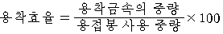
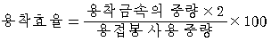
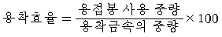
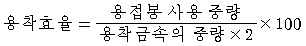
(정답률: 49%)
3과목: 기계제도
51. 그림의 등각투상도에서 화살표 방향이 정면일 때 제3각 투상도로 가장 올바르게 나타낸 것은?
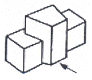
- 평면도 :
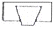
- 좌측면도 :
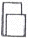
- 정면도 :
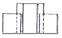
- 우측면도 :
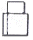
(정답률: 66%)
52. 도면에 아래와 같이 리벳이 표시되었을 경우 올바른 설명은?
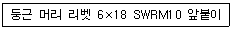
- 둥근머리부의 바깥지름은 18㎜이다.
- 리벳이음의 피치는 10㎜이다.
- 리벳의 길이는 10㎜이다.
- 호칭 지름은 6㎜이다.
(정답률: 56%)
53. 암이나 러브 등을 도형 내에 단면 도시할 때 절단한 곳에 겹쳐서 단면 형상을 그리는 경우 사용하는 선은?
- 가는 실선
- 파선
- 굵은 실선
- 가상선
(정답률: 31%)
54. 보기 용접 기호 중
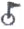
가 나타내는 의미 설명으로 올바른 것은?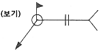
- 전둘레 필릿 용접
- 현장 필릿 용접
- 전둘레 현장 용접
- 현장 점 용접
(정답률: 65%)
55. 배관설비도의 계기표시기호 중에서 유량계를 나타내는 기호는?
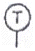
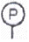
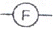
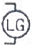
(정답률: 59%)
56. 도면의 양식 중 반드시 갖추어야할 사항은?
- 방향 마크
- 도면의 구역
- 재단 마크
- 중심 마크
(정답률: 69%)
57. 도면의 표현되는 각도 치수 기입의 예를 나타낸 것이다. 틀린 것은?
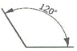
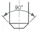
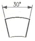
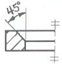
(정답률: 65%)
58. 도면에 2가지 이상의 선이 같은 장소에 겹치어 나타내게 될 경우 우선순위가 가장 높은 것은?
- 숨은선
- 외형선
- 절단선
- 중심선
(정답률: 62%)
59. 그림과 같은 원뿔을 전개하였을 경우 나타난 부채꼴의 전개각(전개된 물체의 꼭지각)이 120°가 되려면 ℓ의 치수는 ?
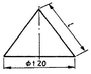
- 90
- 120
- 180
- 270
(정답률: 47%)
60. 용접부 표면 또는 용접부 형상에 대한 보조기호 설명으로 틀린 것은?
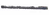
: 평면- : 볼록형
- : 영구적인 이면판재 사용
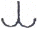
: 토우를 매끄럽게 함
(정답률: 72%)
PV = nRT
여기서 P는 압력, V는 부피, n은 몰수, R은 기체상수, T는 온도를 나타냅니다.
이 문제에서는 압력과 부피가 주어졌으므로, 이를 이용하여 몰수를 구하고, 이를 다시 부피에 대입하여 최종 부피를 구할 수 있습니다.
먼저, 몰수를 구하기 위해 다음과 같은 식을 사용합니다.
n = PV/RT
여기서, P = 150kgf/㎠ = 150 × 9.8 × 10^3 Pa (1kgf = 9.8N)
V = 33.7L = 33.7 × 10^-3 m^3
R = 8.31 J/mol·K (기체상수)
T = 273K (대기온도)
따라서,
n = (150 × 9.8 × 10^3 Pa) × (33.7 × 10^-3 m^3) / (8.31 J/mol·K × 273K)
= 19.5 mol
이제, 몰수를 구했으므로, 이를 다시 부피에 대입하여 최종 부피를 구합니다.
V' = nRT/P
여기서, P는 대기압으로 가정하겠습니다. 대기압은 보통 1 atm으로 가정합니다.
P = 1 atm = 101325 Pa
따라서,
V' = (19.5 mol) × (8.31 J/mol·K) × (273K) / (101325 Pa)
= 0.5⑤5 m^3
= 5⑤5 L
따라서, 산소는 5⑤5 리터입니다.